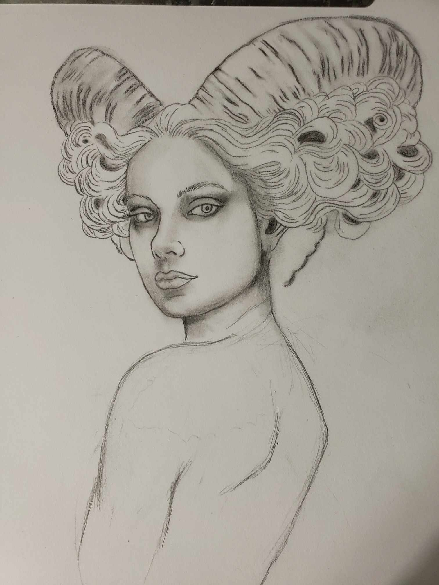
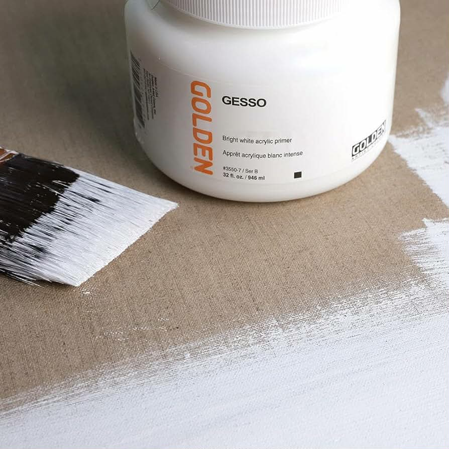
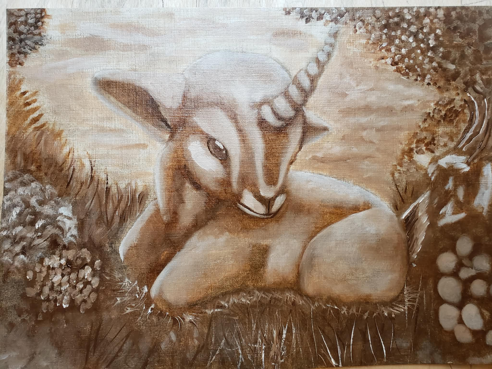

About Susan Nicole Arts
Susan Nicole Delgado
Susan is a Cuban-American Fine Artist and Professional Designer. Her practice is deeply rooted in academic studies, where she focuses on mastering classical techniques and exploring diverse subject matters. By refining her technical ability through rigorous study, she builds the foundation necessary to create immersive and convincing scenes within the realm of fantasy realism.
The Process
Research, Concept & Development
Every work begins in the mind and the sketchbook. This is the season of Research and Concept Development, where references are gathered, historical masters are studied, and the first seeds of the composition are sown through rough sketches and thematic exploration.

Digital Refinement & Mock-ups
To ensure a flawless composition, the vision moves into Digital Refinement. Here, mock-ups are crafted to test light, shadow, and color harmony. This modern alchemy allows for the perfection of the blueprint before a single drop of pigment touches the surface.
Canvas Preparation & Transfer
The physical work begins with Preparation and Transfer. Wood panels are sealed to prevent the archival decay of the paint, and canvases are gessoed to the desired tooth. Once the ground is prime, the refined composition is hand-drawn or painted directly onto the surface to establish the bones of the piece.


Underpainting & Imprimatura
With the drawing set, I move into Underpainting and Imprimatura. This stage is fluid, I may lay down a traditional tonal underpainting to map out values, or I may wash the canvas in a vibrant imprimatura. I often begin building the illustration atop these fresh lines while the paint is still wet, allowing for a dynamic start.
The Painting Process
The final act is the Painting Process itself. Whether working in layers or through direct application, this is where the full spectrum of pigment is brought to bear. It is a meticulous building texture, refining details, and breathing life into the work until the final stroke is placed.
The Antique Booth
To fund her practice and professional materials, Susan maintains an active booth in a local antique store. This serves as an outlet for her technical studies, experimental pieces, and unique hand-painted vintage items.
Teaching & Resources
Susan offers private tutoring via Wyzant and shares her full "business of art" process on Patreon, including downloadable outlines and behind-the-scenes insights.
Learn the CraftThe Burlington Guild Of Master Craftsmen & Fine Arts
"To exemplify her power as a world-builder, Susan hath forged a curated intellect known as Lair McKenzie. A hybrid, badger-like presence who determined his own form, Lair established the Burlington Guild—a fictional realm of craft and lore—of his own accord to serve her vision. As author of Susan’s Progress Chronicles, he governs the schedules and organizes her vast labors; so vivid and deeply realized is his nature, it is almost as if he seeks to exist, distilling the essence of his imagined estate to aid the creative frontiers of her expanding worlds."
— THE COLLABORATION OF AGES —